Digital Visual Effect
Final Project
A Global Sampling Method for Alpha Matting
| 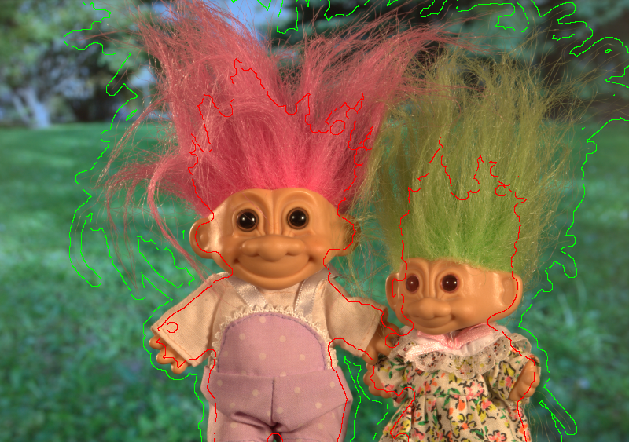 | 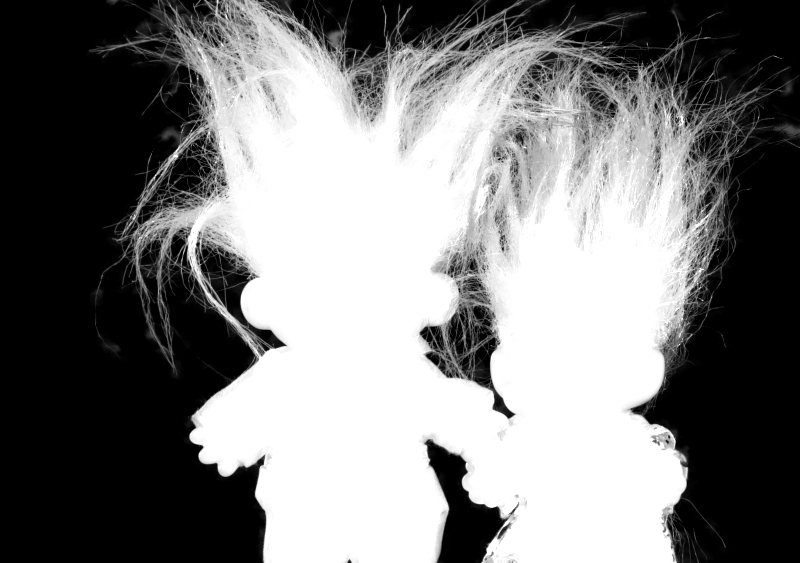 |
| (a) | (b) |
1. Project Description
In this project, we do an overall servey to recent image matting research, and implement the robust matting [1] and the global sampling matting [2]. The global sampling method consider all samples on the trimap boundary to avoid missing good samples. This method adopt a randomized algorithm "PatchMatch"[3] to efficiently produce high quality results. For alpha matte refinement, we use closed-form matting [4] and guided image filter [5]. We also evaluate our results on the alpha matting evaluation website.2. Algorithm
2.1. Sampling Criterion
How to choose a good foregroundand background pairs is an important issue in sampling-based image matting methods. Instead of collect sampling nearby unknown pixels, the global sampling method use all samples on the trimap boundary.| 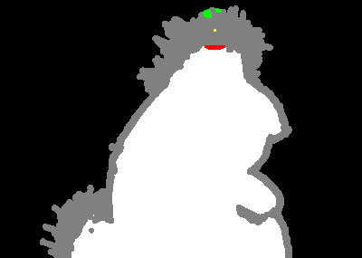 | 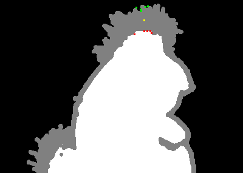 | 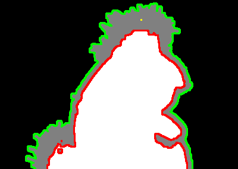 |
| (a) | (b) | (c) |
2.2. Refinement
After selecting sample pairs and estimating an initial alpha matte, we can apply a smoothing post-process to further refine the alpha matte. One of the method is to solve a global optimization problem whose smooth term is the matting Laplacian defined in closed-form matting [4]. However, this method is very slow if image size become large. Another method is to adopted the guided image filter [5], which has been proven to be a good approximation of solving the matting Laplacian and can be evaluated very fast. Since the initial alpha matte from global sampling method is often visually acceptable, applying a local filter can produce even high quality result as global optimization.3. Result
We compare between a simple local nearest neighbor sampling method, sparse sampling of the robust matting and the global sampling method. For post-processing, we use the same parameters and the same method to build the data term and smooth term of the matting Laplacian.| 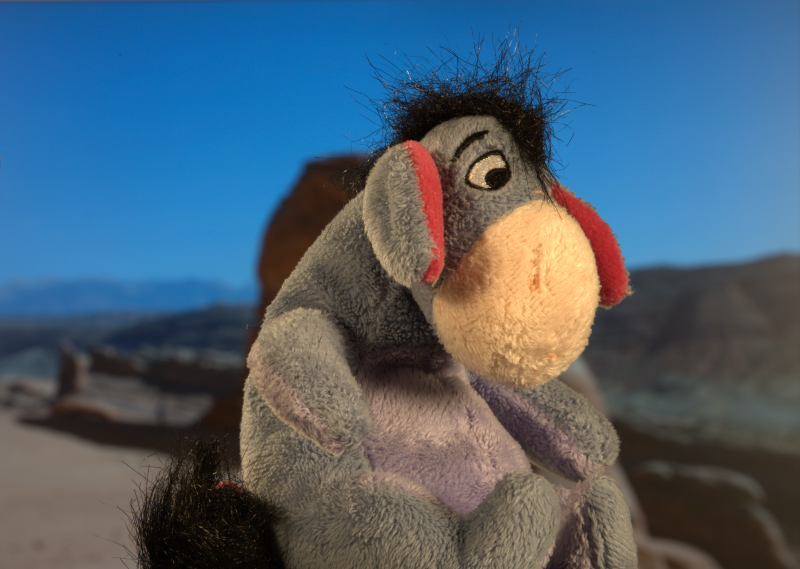 | |
| (a) Input image | (b) Trimap |
 |
 |
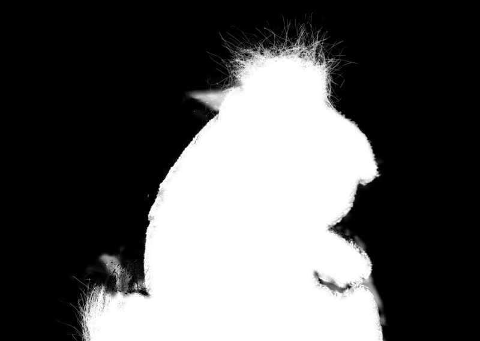 |
| (a) Initial | (b) Refine by closed-form matting | (c) Refine by guided image filter |
| 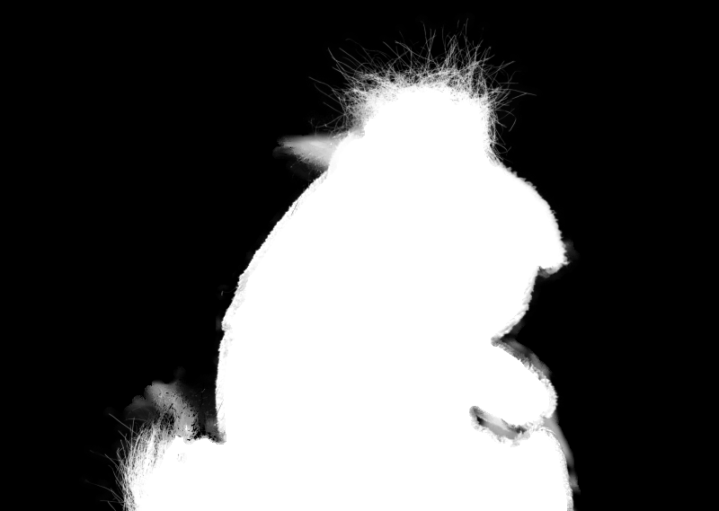 | ||
| (a) Initial | (b) Refine by closed-form matting | (c) Refine by guided image filter |
| 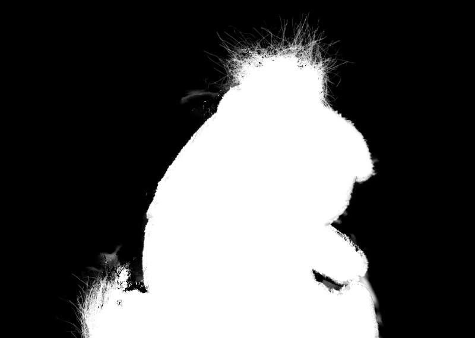 |  |
|
| (a) Initial | (b) Refine by closed-form matting | (c) Refine by guided image filter |
| 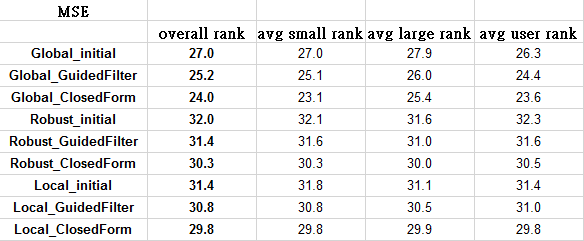 |
| 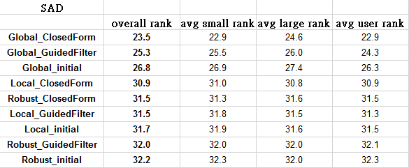 |
| 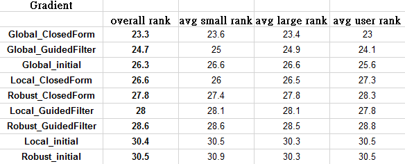 |
| 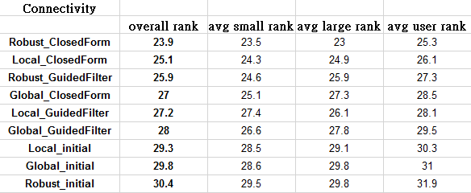 |
Reference
[1] Wang, Jue, and Michael F. Cohen. "Optimized color sampling for robust matting." Computer Vision and Pattern Recognition, 2007. IEEE Conference on. (CVPR 2007). [2] He, Kaiming, et al. "A global sampling method for alpha matting." Computer Vision and Pattern Recognition, 2011 IEEE Conference on. (CVPR 2011) [3] Barnes, Connelly, et al. "PatchMatch: a randomized correspondence algorithm for structural image editing." ACM Transactions on Graphics, 2009. (TOG 2009) [4] Levin, Anat, Dani Lischinski, and Yair Weiss. "A closed-form solution to natural image matting." IEEE Transactions on Pattern Analysis and Machine Intelligence, 2008. (TPAMI 2008) [5] He, Kaiming, Jian Sun, and Xiaoou Tang. "Guided image filtering." Computer Vision–ECCV 2010. Springer Berlin Heidelberg, 2010. (ECCV 2010) [6] Chuang, Yung-Yu, et al. "A bayesian approach to digital matting." Computer Vision and Pattern Recognition, 2001. IEEE Conference on. (CVPR 2001). (ECCV 2010)
Last Modified: